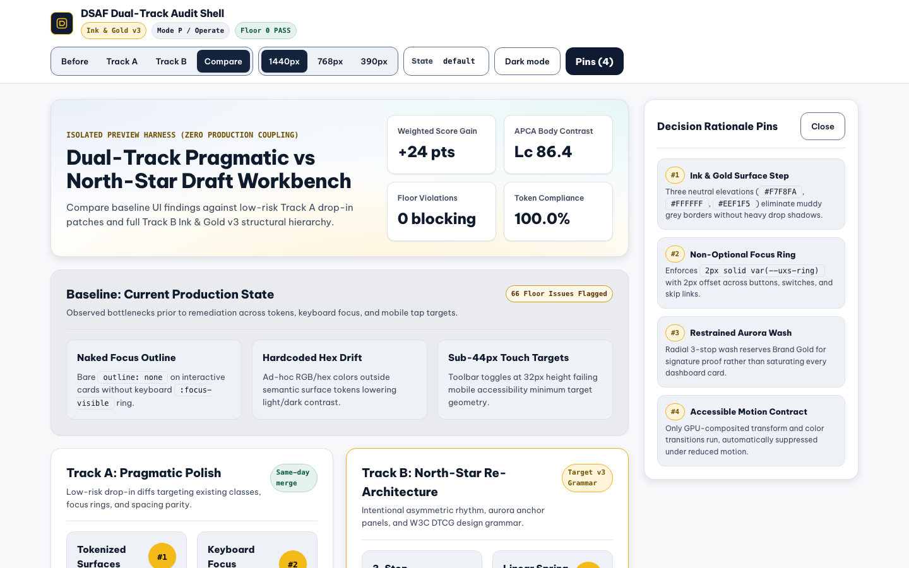

1. Deterministic Scanners
Measures W3C DTCG tokens, orphan CSS variables, Tailwind arbitrary color drift, external DS focus inheritance (--ds-css), and layout-transition footguns in milliseconds.
ZERO-DEPENDENCY DESIGN SYSTEM AUDIT ENGINE
DSAF v0.8.0 combines deterministic Node ESM scanners, Playwright + axe-core visual checks, safe Floor auto-remediation (dsaf fix), and bounded repo evolution loops (dsaf evolve) inside one fast CLI and stdio MCP server.
19
Deterministic CLI subcommands
3 Tiers
Floor, Reflex & Finish gates
Lc 65+
APCA-W3 + WCAG 2.2 AA floor
0 ms
Third-party runtime overhead
Auto-detects Mode S (Design System core), Mode C (Product consuming a DS), and Mode P (Product without formal DS), with built-in Pragmatic vs North-Star guidance.
Measures W3C DTCG tokens, orphan CSS variables, Tailwind arbitrary color drift, external DS focus inheritance (--ds-css), and layout-transition footguns in milliseconds.
dsaf fix performs bounded, AST-safe Floor patches across outline: none focus traps and transition: all rules, with dry-run previews and one-step backups.
dsaf evolve enforces .dsaf/rules.json kill switches, circuit breakers, protected file paths, and non-regression deltas on every improvement cycle.
Conservative, low-blast-radius changes tailored for urgent same-day merges: fixes focus rings, tap target sizing, color token mappings, and compositor-safe transitions without altering product IA.
Structural visual upgrades showcasing Ink & Gold typography cadence, 3-stop aurora washes on anchor panels, DTCG variable extraction, and isolated draft prototypes.
Switch tabs with Tab or arrow keys to inspect installation, Floor auto-remediation, repo evolution governance, and the 8-tool MCP server.
Use npx @zintaen/dsaf cleanly on any workspace or bootstrap repo governance with dsaf init.
npx -y @zintaen/dsaf@0.8.0 recon . --json
npx -y @zintaen/dsaf@0.8.0 hook check src --tier floor
npx -y @zintaen/dsaf@0.8.0 tokens src --strict
npx -y @zintaen/dsaf@0.8.0 init .Tip: Install the Claude Code / Agent Skill globally via npx -y @zintaen/dsaf@0.8.0 install-skill --agent claude --scope user to load SKILL.md and reference scripts automatically.
Preview safe fixes for dsaf/no-outline-none-naked and dsaf/no-transition-all before modifying a single line of CSS.
npx @zintaen/dsaf fix src --dry-run
npx @zintaen/dsaf fix src --apply --backup
npx @zintaen/dsaf hook check src --tier floor.dsaf/rules.json protected paths.--rule filtering and skips generated playwright-report/ & test-results/ artifacts automatically.Verify baselines, record round telemetry into .dsaf/handoff.md, and enforce no-regression gates across Floor, Reflex, and Token compliance.
npx @zintaen/dsaf init .
npx @zintaen/dsaf evolve . --status --json
npx @zintaen/dsaf evolve . --verify --max-rounds 1 --dry-run
npx @zintaen/dsaf doctor ..dsaf/STOP exists or maxConsecutiveFailures trips in .dsaf/circuit-breaker.json.:focus-within / :has(...:focus-visible)) are automatically inherited via --ds-css.Connect DSAF to any MCP-compatible IDE or GitHub Actions workflow using Content-Length or NDJSON stdio framing.
npx @zintaen/dsaf mcp
# Tools: dsaf_recon, dsaf_tokens, dsaf_doctor, dsaf_hook_check,
# dsaf_figma_diff, dsaf_audit, dsaf_fix_preview, dsaf_evolve_status
npx @zintaen/dsaf hook check src --sarif dsaf.sarif --githubRendered offline with Ink & Gold v3 tokens, interactive decision pins, Light/Dark contrast verification, and zero runtime external fonts required.

Concise highlights across DSAF milestones.
| Version | Key Upgrades | Verification Standard |
|---|---|---|
| v0.8.0 | Ink & Gold v3 theme on Preview Shell & Docs, dsaf fix auto-remediator, dsaf evolve governance runner, external DS :focus-within detection (--ds-css), playwright-report ignore, and 8 MCP tools. |
Zero-Dep + OIDC |
| v0.7.0 | 3-Vertex Figma Diff, dsaf init repo governance bootstrap, dsaf mcp stdio server, dsaf doctor health diagnostics, and N-of-1 component signatures. |
CI + Playwright |
| v0.6.0 | SARIF 2.1.0 CI annotations, pixel-behind AA contrast measurement, keyboard tab map, RTL hygiene, and composite GitHub Action. | APCA Lc ≥ 65 |